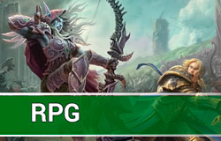
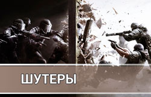
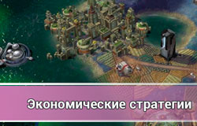
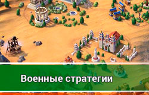

Каждый геймер назовёт вам свой персональный рейтинг, и большинство списков будут отличаться. Причина тому проста: огромное количество различных платформ – любой сегмент может похвастаться чем-то уникальным. К примеру, вы вряд ли захотите играть в футбольный симулятор без джойстика, поэтому спортивные игры невероятно популярны на приставках. В то же время, стратегии в реальном времени и контролеры – вещи несовместимые. Мобильных геймеров покорили карточные игры и аркады, использующие встроенные акселерометры. Радует одно – обилие качественных игр, позволяющее каждому найти что-то своё.
К вашему представлению:
РПГС многопользовательскими РПГ всё довольно просто. Лучшим в данном жанре уже много лет остаётся World of Warcraft. Даже появление весьма мощных ММОРПГ, имеющих огромную популярность в Китае и Южной Корее, не смогли сместить короля с трона. Но помимо «Вовки» есть много других классных РПГ, подробнее о них в статье Лучшие РПГ. |
ПлатформерыЖанр игр, который появился на приставках, довольно популярен и на ПК. А благодаря эмуляторам и портированию во многие игры можно поиграть и на ПК. Обратите внимание на статью Лучшие платформеры, среди игр из списка очень много доступны на ПК. |
ШутерыВторыми по популярности были шутеры, и тут стоит отметить несколько франшиз, которые радуют поклонников качественных «стрелялок» и по сей день: это Quake, Battlefield и Counter-Strike. Battlefield предложит вам любое поле боя на выбор: реальные войны, альтернативная история, третья мировая и сражения в мире будущего. |
Економические стратегииИгры, которые давно завоевали популярность среди любителей ощутить себя королем мира, привести к процветанию доверенную ему страну или же развить с нуля мощную и долговечную империю. Лучшие игры в этом жанре представлены в статье Лучшие экономические стратегии. |
Военные стратегииГеймплейно более агрессивные игры, нисколько не уступают в популярности экономическим стратегиям — военные стратегии. |
Королевская битва
Самый популярный жанр 2017го года, онлайн в самых популярных играх этого жанра играли до миллиона пользователей одновременно! Познакомьтесь с самыми популярными играми в статье Игры в жанре Battle Royale. |
Заполните форму, чтобы выбрать любимый жанр игр.